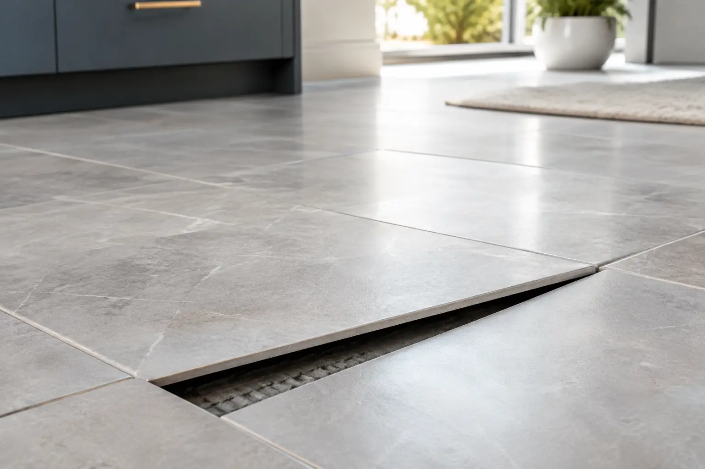
What Causes Loose Floor Tiles? 8 Common Reasons
Learn what causes loose floor tiles, how to spot the source, and when professional tile repair protects your Tampa Bay home’s finish and safety over time.


Authoritative advice from Geraldo Silva on tile selection, moisture management, contractor vetting, and long-lasting Tampa Bay installations.
Clear guidance on style, durability, moisture control, substrate preparation, and hiring with total confidence.

Learn what causes loose floor tiles, how to spot the source, and when professional tile repair protects your Tampa Bay home’s finish and safety over time.
Compare the best bathroom flooring options for Tampa Bay homes, from porcelain tile to luxury vinyl, with clear guidance on style, durability, and care.
Choose a flooring contractor in Tampa with confidence. Learn what to ask about materials, preparation, timelines, estimates, and installation quality.
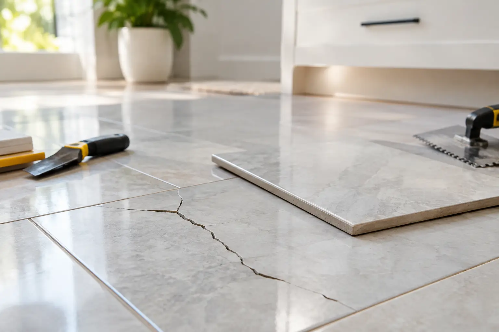
Can cracked tiles be replaced without disrupting the rest of your floor? Learn when repair works, what causes damage, and what a pro checks next.
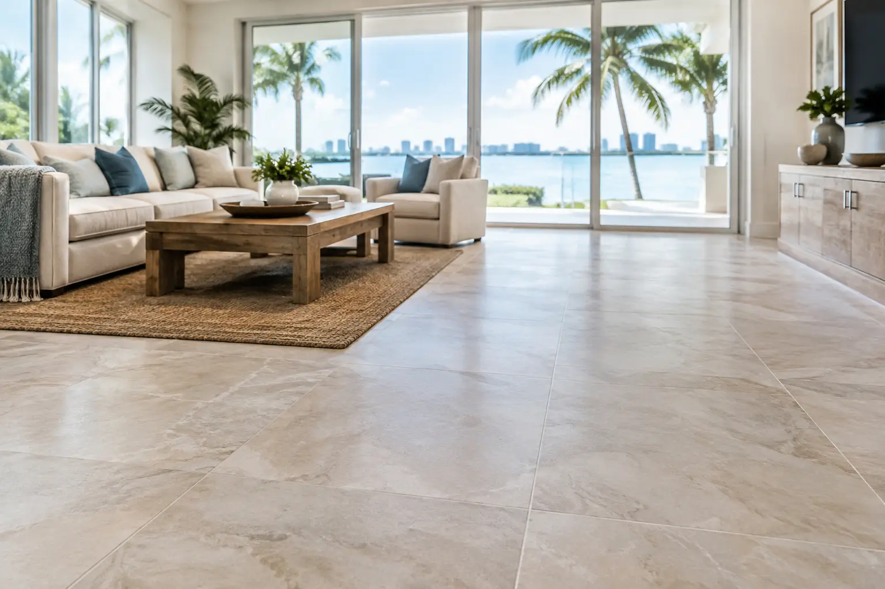
Choose tile flooring with confidence. Learn how material, layout, preparation, grout, and expert installation shape a durable finish for Tampa Bay homes.
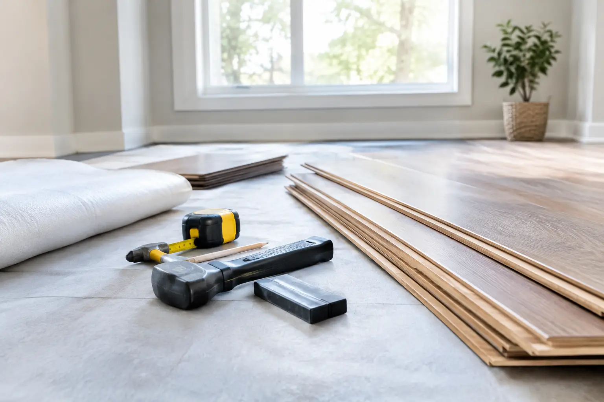
Learn how to prepare for flooring installation with a clear, practical checklist for protecting your home, scheduling work, and planning a clean start.
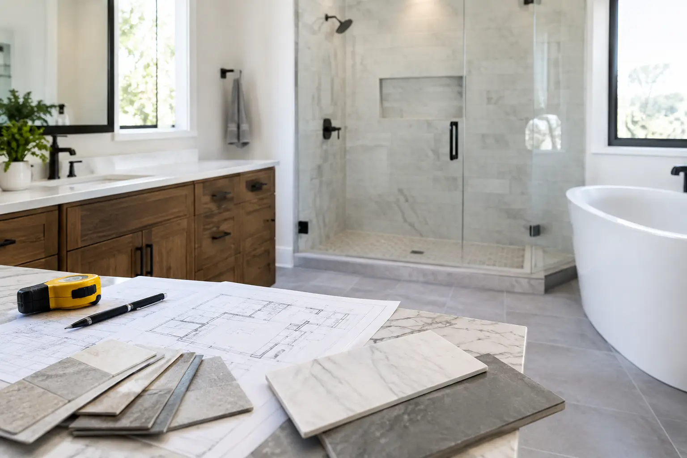
Plan your bathroom renovation timeline with clear phases, realistic lead times, and practical guidance for a clean, quality-focused Tampa Bay project.
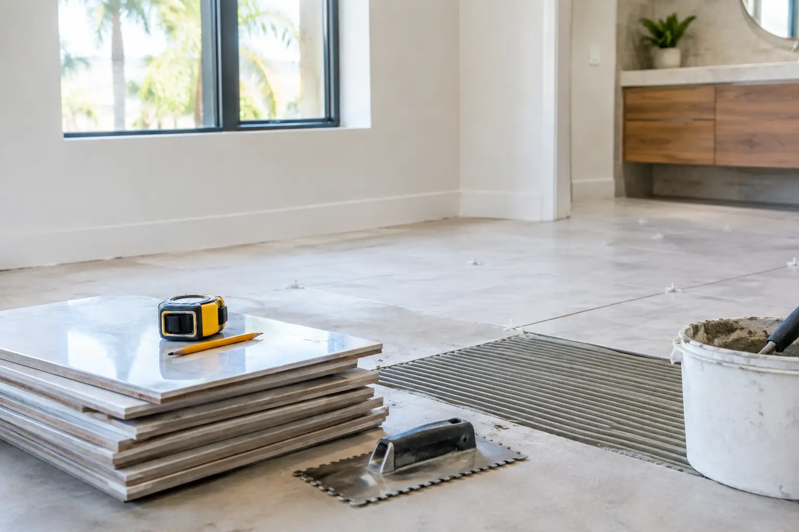
Learn how to prepare for Tampa tile installation with clear steps for access, materials, scheduling, and a clean, precise project start with confidence.
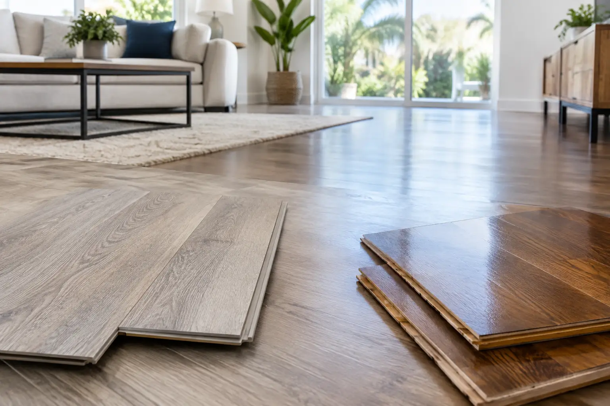
Compare LVP versus hardwood flooring for Tampa Bay homes, including durability, moisture resistance, comfort, upkeep, design, installation, key factors.
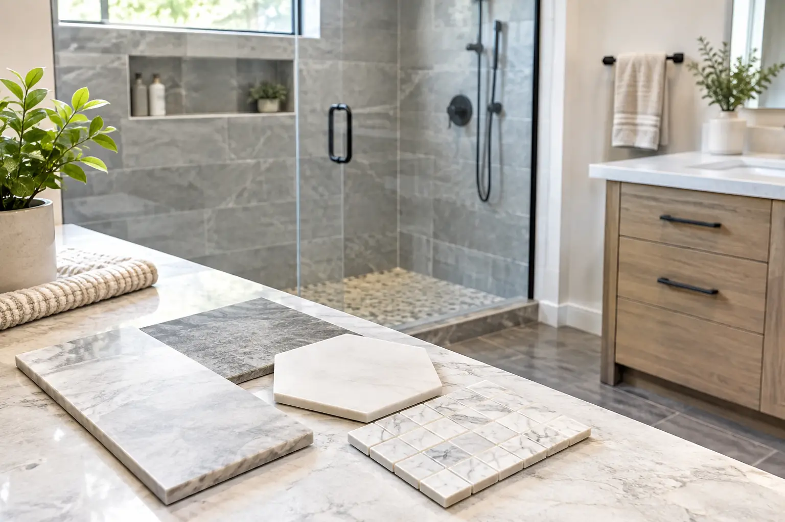
Learn how to choose bathroom tile for Tampa Bay homes, balancing style, slip resistance, maintenance, budget, and professional installation quality work.
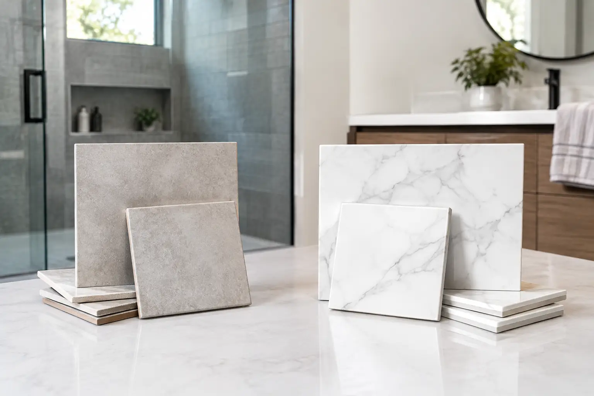
Ceramic versus porcelain tile: compare durability, water resistance, cost, and design to choose the surface for Tampa Bay floors, walls, and showers.
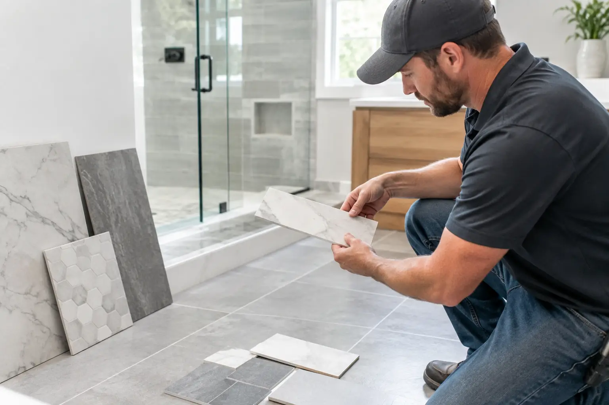
Ask the right questions before hiring a tile installer, including estimates, preparation, layout, materials, cleanup, scheduling, and project details.
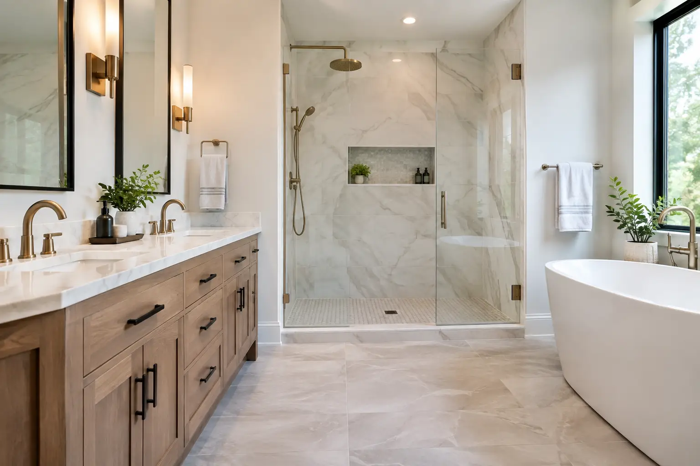
Plan a bathroom renovation with durable tile, thoughtful shower design, clear preparation, and precise installation for a finish that holds up beautifully.
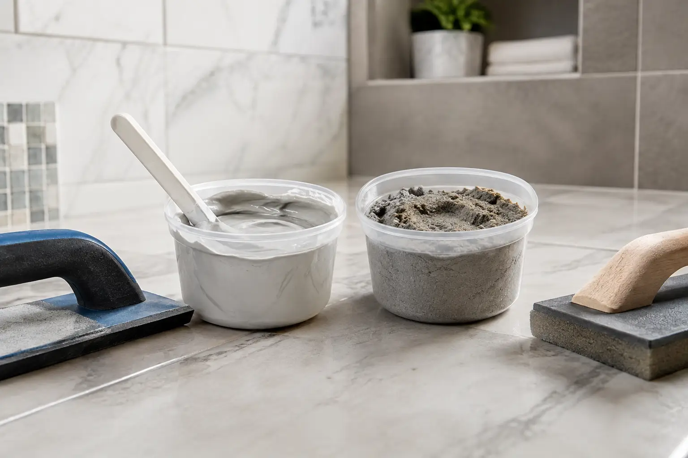
Compare epoxy versus cement grout for Tampa Bay tile projects. Learn where each material performs best, what maintenance it needs, and how costs differ.
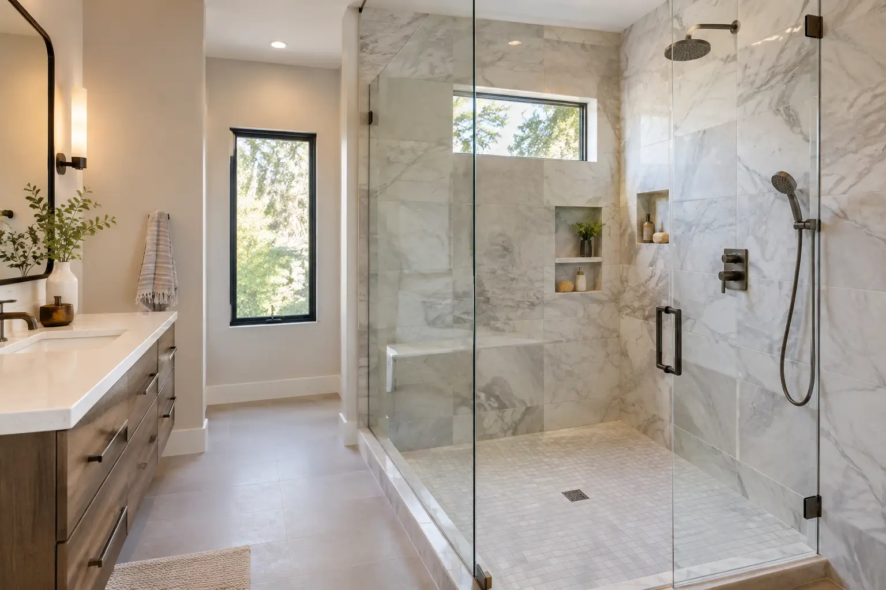
Thoughtful shower design balances tile, layout, drainage, storage, and finish details to create a Tampa Bay bathroom built for comfort and daily use.
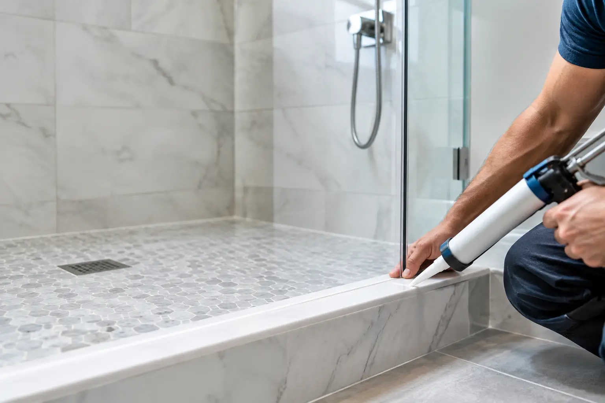
Prevent shower leaks with smart shower design, proper material selection, and precise installation that protects your Tampa Bay bathroom for years to come.
Learn what tile installation warranty coverage may include, what it does not, and the questions Tampa Bay property owners should ask before work begins.
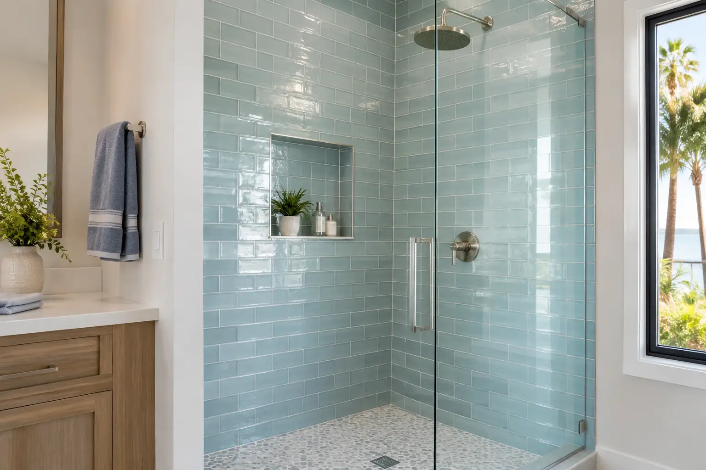
Find the best tile for shower walls by comparing porcelain, ceramic, glass, and stone for durability, cleaning needs, style, and a lasting finish every day.
Choose a restaurant tile flooring contractor who plans for traffic, sanitation, slip resistance, and polished finishes that support daily service well.
A clear tile installation estimate Tampa Bay homeowners can use to plan materials, preparation, installation details, and a polished final walkthrough.